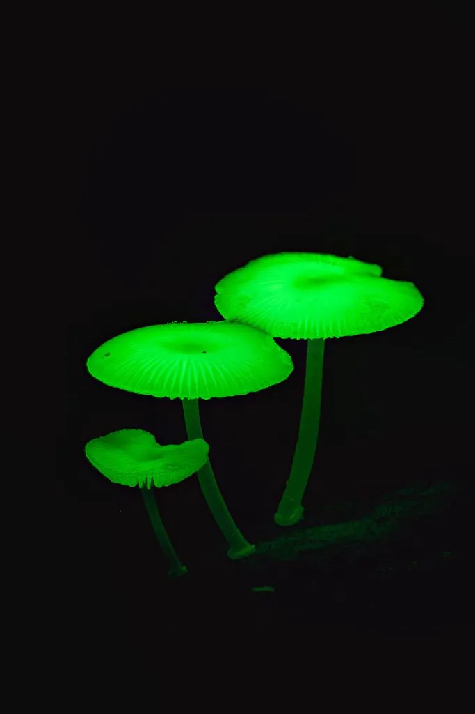

真菌 · 真菌界
发光小菇 Mycena chlorophos

菌盖在黑暗中能发出淡绿色荧光的蘑菇，靠生物发光吸引昆虫传播孢子，常见于热带和亚热带的腐木上。
- 分类
- 门担子菌门纲伞菌纲目伞菌目科小菇科属小菇属
- 栖息环境
- 热带和亚热带阔叶林的腐木、落叶和树皮上
- 地理分布
- 中国南方、东南亚和日本等地，泛热带分布
- 保护级别
- 暂无评估（IUCN 未评估，不宜食用）
物种志
发光小菇是担子菌门伞菌目的木腐真菌，子实体小型，单生或群生。菌盖呈半球形至钟形，直径 1–3 cm，表面淡黄绿色至白色，在黑暗中能发出柔和的淡绿色荧光；菌褶白色，较疏；菌柄细长，白色至淡黄色，也带荧光；孢子印白色。它的发光是由菌丝中的荧光素与荧光素酶反应产生的。
发光小菇多生于热带和亚热带阔叶林的腐木、落叶和树皮上，在中国南方、东南亚和日本等地有分布。它的荧光在夜间十分明显，常被误认为是“萤火虫”。生物发光被认为能吸引夜行昆虫，帮助真菌传播孢子。发光小菇虽然通常被认为毒性不明确，但小菇属中有部分种类含有毒素，绝不能食用。观赏时也不要用强光长时间照射，以免影响它的发光。
形态与习性
- 菌盖直径 1–3 cm，淡黄绿色至白色，夜间发淡绿光
- 菌褶白色，较疏
- 菌柄细长，白色至淡黄色，也带荧光
- 孢子印白色
- 发光机制荧光素与荧光素酶反应产生冷光
- 发光作用被认为能吸引夜行昆虫传播孢子
- 食用性不宜食用，小菇属部分种类含毒素
趣味知识
- 发光小菇在黑暗中会发出柔和的淡绿色荧光。
- 它的发光来自菌丝中的荧光素与荧光素酶反应。
- 生物发光被认为能吸引昆虫，帮助真菌传播孢子。
- 小菇属中有含毒素的种类，发光小菇绝不能食用。